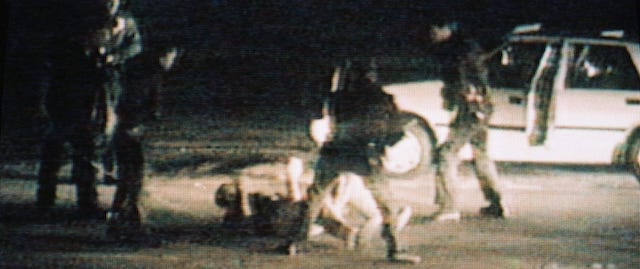
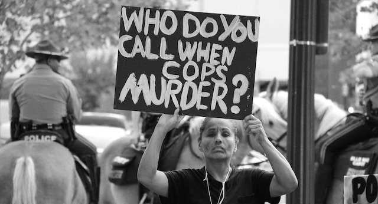
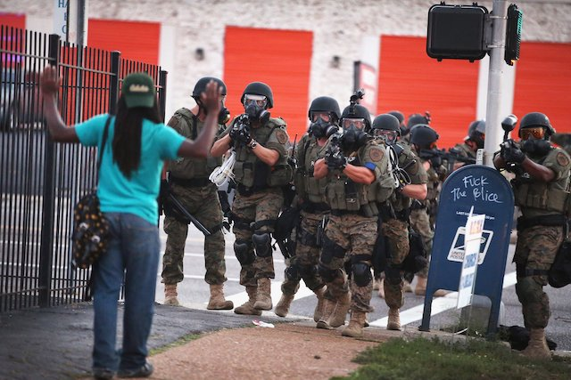
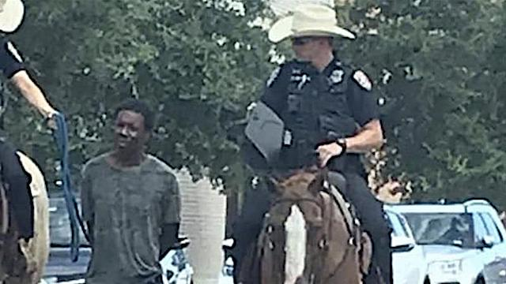
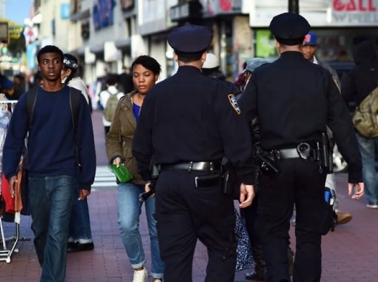
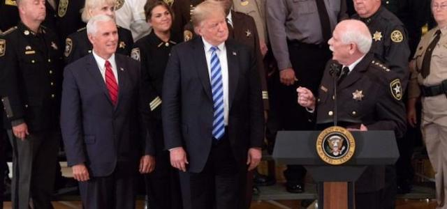
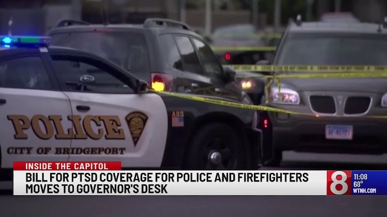
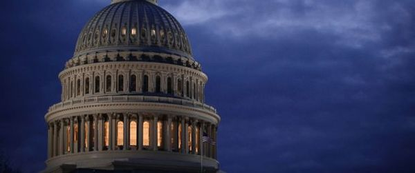

2019-08-15 08:00

Whenever I encounter a story about police abuse it almost always involves white cops and black or brown citizens. If not the police, it’s courts, prisons, or immigration authorities. You don’t have to be particularly perceptive to recognize the dominant factor in all these stories; you just need a long memory and a filing system. Racism permeates every aspect of American life — especially the criminal justice system and, most especially, the police.
So it was no surprise last week, when Scott Hovsepian of the Massachusetts Coalition of Police (MassCOP) blasted Elizabeth Warren for referring to the shooting of Michael Brown in Ferguson, Missouri as a “murder.” With black men having a one in a thousand chance of being fatally shot by police in their lifetime — two times the rate for whites — there is really no other word that suits this extreme indifference to life but murder. We are in fact so indifferent to these killings that police shootings aren’t even tracked by a government agency.

Delicate ears may prefer the phrases “wrongful death” or “unauthorized use of force.” But who are we kidding? Even when the evidence is crystal-clear that a police shooting was completely unnecessary and violated any number of departmental policies or protocols, officials will rarely admit to a mistake and instead trot out a legal doctrine known as Qualified Immunity which effectively gives policemen a license to kill — even when they have previously exhibited bad judgment, have psychological problems or a history of violence toward the non-white public. Even when the officer lies. Even when there is a video.
Hovsepian’s angry letter to Warren went out on August 10th:
“I want to make this as clear as possible and every member of the Massachusetts Coalition of Police wants you to understand; your labeling of law enforcement as racist and violent is unacceptable and dangerous. Maybe I didn’t deliver the message strong enough the last time we spoke. YOUR POLITICAL PANDERING FOR PRESIDENTIAL VOTES IS GETTING POLICE OFFICERS AND CITIZENS HURT AND KILLED. […] Your inflammatory rhetoric results in the erosion of relationships that members of law enforcement have developed within our communities. […] Graham v. Connor 490 U.S. at 396-97 (1989), provides in part: The ‘reasonableness’ of a particular use of force must be judged from the perspective of a reasonable officer on the scene…”
Unacceptable and dangerous. For a moment, a reader might be excused for thinking Hovsepian meant the national epidemic of police officers slaughtering black men, two thirds of them unarmed. Hovsepian mentions Qualified Immunity as a police officer’s shield from charges of murder in the second degree — “acts that demonstrate extreme indifference to human life.” But it’s not police killings that we ought to be worried about, says Hovsepian — no, it’s public criticism of the police that is killing officers. Or so he says.

A year ago at Dillard University, Hovsepian took issue with Warren’s characterization of the entire U.S. criminal justice system. Warren said that “the hard truth about our criminal justice system: it’s racist… I mean front to back.” Hovsepian labelled Warren’s characterization “cancerous rhetoric” and again charged that criticism of police was lethal: “Your statements put each and every one of us in danger. Your statement dehumanizes every officer who puts on a uniform…”
Playing the part of the wronged and “dehumanized” party may be nothing but a rhetorical ploy, but it is precisely the same argument as Tucker Carlson’s claim that White Supremacy is a hoax because white people are the real victims of the American legacy of slavery.
Last week the Washington Post reported that, “among men of all races, ages 25 to 29, police killings are the sixth-leading cause of death, according to a study led by Frank Edwards of Rutgers University.” In 2018 police killed 1,164 people. The number of black people killed by police (215) exceeded all police officers who died in the line of duty (148), servicemen killed in action (2) and Americans killed by Islamic terrorists (0) combined. There were only 23 days in 2018 when police did not kill someone. Thirteen of the 100 largest police departments accounted for a large percentage of police murders that year. 99% of all police killings never resulted in officers being convicted of any charges. In 2018 Americans were ten times more likely to die from being shot by a cop than in a mass shooting.
So, if anyone has a legitimate and “reasonable fear,” it is civilians fearing police violence. Americans are also increasingly afraid of militarized policing that is morphing into something very like occupation. Following the protests of Michael Brown’s murder, police turned Ferguson’s Canfield Drive into Fallujah.
While no doubt there are many good police officers and police departments, from the 30,000 foot view Warren is absolutely right. The names of black victims of police abuse, from Rodney King to Tamir Rice, Sandra Bland, Eric Garner, Laquan McDonald, and Michael Brown, just keep being etched on headstones. We know what skin colors predominate among America’s 2.5 million incarcerated people. The legacy of slavery is apparent to anyone who has studied criminal justice issues or simply reads the newspaper. The Central Park Five, whose story was recently portrayed in Netflix’s “When They See Us,” embody everything that is wrong with America’s racist criminal justice system — police misconduct, prosecutorial misconduct and overreach, brutal prisons — even an ad from a future president that read like a call to lynch five young men of color.
MassCOP’s Scott Hovsepian has it completely backwards when he charges that criticism of police racism puts officers at risk and undermines their work. It is racist cops who undermine community confidence in police departments and contribute to a community’s fear of helping police reduce crime. No matter how many public relations campaigns, youth programs, listening sessions, or ride-alongs police departments use to blunt community criticism, nothing compensates for all the damage that racist officers inflict.
Take the case of 20 year Muskegon, Michigan police officer Charles Anderson. Anderson put his house on the market and apparently didn’t think to put his KKK application or his Confederate flags away. A black couple touring the home realized the officer was a racist and dug into Anderson’s history, discovering he had been cleared in the fatal shooting of a black man in 2009. It wasn’t a surprise. The killing or the exoneration.

Or a story from August 6th describing Galveston, Texas cops leading a black man, slave-style, between the mounted officers’ horses. Police chief Vernon Hale weakly explained, “Although this is a trained technique and best practice in some scenarios, I believe our officers showed poor judgement in this instance.” Poor judgment that went unpunished.
Sergeant Heather Taylor, a member of the St. Louis Metro police department, was interviewed recently by CBS News as part of its series on racial bias in American police departments. “Do you think that there are white supremacists on the police force?” CBS News correspondent Jeff Pegues asked. “Yes” Taylor replied. “You didn’t even pause,” Pegues said. “Have you seen some of the Facebook posts of some of our suspended officers right now?” Taylor responded. “Yes.”
Taylor could have been referring to Facebook posts collected by the Plain View Project, which to date has permanently recorded over 5,000 racist posts — that’s from only eight cities. The Project’s homepage says that “our concern is not whether these posts and comments are protected by the First Amendment. Rather, we believe that because fairness, equal treatment, and integrity are essential to the legitimacy of policing, these posts and comments should be part of a national dialogue about police” — a dialog shut down by police officials who claim that such a discussions put their lives at risk.
Blue Lives matter to police officers, but the same concern doesn’t aways extend to civilians — especially the black lives. In 2016 an Oregon police officer posted an image of a Black Lives Matter protest with a comment, “When encountering such mobs remember, there are 3 pedals on your floor. Push the right one all the way down.”
The Facebook page of Santa Fe, New Mexico Sergeant Troy Baker, also the police union president and a police cadet instructor, was a veritable cesspool of racist and homophobic rants, violent threats, and Confederate flags. Baker survived an internal investigation when no violation of department policy was determined, and he was allowed to retire early, remaining on the city payroll for eight months to obtain his pension.
Springfield, Massachusetts cop Conrad Lariviere thought white supremacist James Alex Fields Jr. running down Heather Heyer in Charlotteville was pretty funny. “Hahahaha love this, maybe people shouldn’t block roads,” Lariviere wrote on Facebook. When confronted with the post, Lariviere told MassLive.com, “I am not a racist and don’t believe in what any of those protesters are doing, I’m a good man who made a stupid comment and would just like to be left alone.”
Lariviere was eventually fired but the damage was already done. “It will take us months, if not years, to earn back the level of public trust we once had,” Police Commissioner John Barbieri said. “It’s never easy to terminate a fellow officer, and I take no comfort in doing so.” But Lariviere’s union, Local 364 of the International Brotherhood of Police Officers, issued a statement saying it was —
“extremely disappointed in the decision of Commissioner Barbieri to terminate the employment of Officer Conrad Lariviere. Officer Lariviere’s comments on Facebook were made in his capacity as a private citizen […] While some may find Off. Lariviere’s comments to have been insensitive, we do not believe that they rise to the level of misconduct, and certainly do not warrant termination, even if there was a clear policy involved […] We also believe that the subject of the Facebook posting was a matter of public concern, and protected speech. We believe that the termination is based on political considerations, not a fair, impartial assessment of the evidence…”
Racist conduct and exercising poor judgement are, for many police associations, insignificant matters for officers charged with serving the public fairly.

In Phoenix, Arizona, 75 cops were caught on Facebook bashing Muslims, African-Americans, gays, and feminists. When Trayvon Martin was murdered, Phoenix officer Joshua Ankert wrote, “CONGRATULATIONS GEORGE ZIMMERMAN!!! Thank you for cleaning up our community one thug at a time.” Officer Dave Swick posted a roadside sign that said, “Ferguson protestors ahead, speed up, aim well.” Police dispatcher Christina Begay shared a picture of two cops laughing with the caption: “They said, ‘F–k the police,’ so I said ‘F–k your 911 call, I’ll get to your dying home boy when I finish my coffee.” Officer David Pallas posted a meme showing the Quran, with a caption that read: “HOW ABOUT BANNING THIS. IT OFFENDS ME!!” The Phoenix Law Enforcement Association defended the posts. “People — including cops — say things they regret.”
Add to a climate of hate the many unfortunate interactions between police officers and young people. Stop and Frisk — violations of the Fourth Amendment — go by many names: “community engagement,” “meet and greet,” “youth liaison.” But they only add to the fear, distrust and hatred many people have of police officers. In New Bedford a young man, Malcolm Gracia, is dead because police officers decided to aggressively “engage” a group of young men at Temple Landing after seeing what they thought was a “gang handshake.”
After allegedly stabbing an officer, Gracia was shot three times in the back and once in the side of the head. But the entire interaction should never have happened. “Even on the [police] version of the facts, the stop would be unlawful,” Judge Thomas F. McGuire Jr. wrote in a memorandum on a civil lawsuit filed by the victim’s sister. The City of New Bedford for many years claimed that the incident had occurred because of insufficient policies on “engagement” with youth. After the ACLU filed several FOIA requests, the city’s argument collapsed. Police should have simply followed the law.
But it’s not just a few bad apples or the frequently-cited lack of clear policies. As we saw in the case of Santa Fe, New Mexico, departmental racism often reflects, and is even encouraged by, the leadership of police unions and associations who represent tens of thousands of officers.
Consider Hovsepian’s Brother in Blue, Ed Mullins, the president of the Sergeants Benevolent Association, New York City’s second largest police union. Only last week Mullins shared a video made by white supremacist Colin Flaherty (author of “Don’t Make the Black Kids Angry”) that calls black people “welfare queens,” “scam artists” and “monsters.” The film uses Trump-styled language:
“When a suspect chooses to flee from police, it is never for anything good,” the narrator says. “When a suspect flees a car at night in the projects, it can only be for something incredibly bad. One of the most astonishing aspects of police work in an urban environment, is the fact that almost literally no one has a job. The section 8 scam artists and welfare queens have mastered the art of gaming the taxpayer. Bounce from baby mama to baby mama, impregnate as many women as possible. She gets the welfare benefits, and you get the flop house benefits. Symbiotic.”
Mullins, nose freshly rubbed in his own white supremacy, uttered “I have black friends, white friends, Asian friends. I wouldn’t want to insult anyone. I don’t think one incident defines who I am.”

Or consider the nation’s largest group of sheriffs, the National Sheriff’s Association, which once sponsored its own crowdfunded border wall donation site but has now outsourced it to the American Border Foundation (ABF), an organization managed by white supremacists and supported by armed militias. (After months, ABF has raised only $222K of its $450 million goal).
According to Political Research Associates, a group that tracks nationalist currents in the U.S., sheriff departments throughout the country are riddled with members of the Patriot movement, Constitutional Sheriffs, militia members, Christian Identitarians, and white supremacists. Right here at home, Bristol County Massachusetts sheriff Tom Hodgson sits on the board of a group the Southern Poverty Law Center calls a hate group — FAIR, the Federation for American Immigration Reform, established by white supremacist John Tanton.
But combine police racism with hyper-patriotism, militarism and PTSD, and you’ve got a big problem.
Since 9-11 more than 2 million Americans have been deployed to Iraq and Afghanistan. The Department of Justice runs a program called COPS (Community Oriented Policing Services) which provides grants to communities to turn “vets to cops.” In 2016 the DOJ handed out $119 million to help communities pay for approximately 900 policemen. The International Association of Chiefs of Police (IACP) has created a recruitment guide for veterans, and veterans can use their GI Bill benefits while attending police academy. America increasingly says “thank you for your service” to its warriors by re-deploying them domestically.
But programs like these, and hiring practices that favor ex-military, have a serious downside. By prioritizing military experience over diversity, police departments put communities at risk. For example, the San Jose Police Department, a force with serious racism problems, sees veterans as naturals for the police “because we have a paramilitary structure, [and] military veterans often times can easily integrate.” What ever happened to community policing?

Then there are the after-effects of war. With an increasing percentage of veterans becoming police officers thanks to programs like COPS, many officers seem to think they are still fighting the Taliban or Iraqi insurgents. Ellen Kirshman, a psychologist who works with police officers, says that between 19% and 34% of all officers show some sign of PTSD: “This is pretty alarming. An officer with PTSD cannot think clearly, is probably hyper vigilant, has a short fuse, may not be sleeping well because of nightmares, might be policing in a reckless manner…” And this is precisely what one frequently sees in videos of police encounters with black men. Legislation has been signed into law to help officers with PTSD, but what about the public? Aren’t there cops who are simply too traumatized to serve the public? Even when they are identified, it’s difficult to remove them from the force.
When Elizabeth Warren spoke about the criminal justice system, she was talking about much more than policing. Yet police unions have become powerful lobbies and relentless opponents of criminal justice and prison reform. Natasha Lennard reports in the Intercept on the savage negative campaign the New York State Correctional Officers and Police Benevolent Association (NYSCOPBA) waged against Governor Mario Cuomo’s criminal justice reforms. Likewise, the California Correctional Peace Officers Association spent over $10 million lobbying for the Three Strikes law, mandatory life sentences, and prison expansions. In Illinois, police unions waged a campaign to stop the closure of the brutal Tamms Supermax prison. And we have fifty states just like this.
But nothing shows how racist the criminal justice system is as clearly as the history of opposition to reforming it.

In 1991 Rep. William Edwards introduced H.R.2972, the Police Accountability Act of 1991. The bill made it “unlawful for any governmental authority to engage in a pattern or practice of conduct by law enforcement officers that deprives persons of their constitutional or statutory rights, privileges, or immunities.” The bill had only 10 co-sponsors and never made it out of committee.
In 2000 John Conyers Jr. sponsored H.R. 3927, the Law Enforcement Trust and Integrity Act of 2000, which sought to impose national standards on law enforcement as we currently do in education. It had only thirteen Democratic co-sponsors and never made it to a vote. In 2015 Conyers again filed H.R.2875, this time with 48 co-sponsors. But again it died.
In 2015 Rep. Henry Johnson Jr. sponsored H.R.1102, the Police Accountability Act of 2015, which had 15 co-sponsors and died. The bill amended “title 18, United States Code, to provide a penalty for assault or homicide committed by certain State or local law enforcement officers, and for other purposes.” Again in 2017 Johnson filed H.R.4331, with 8 lonely co-sponsors. Again, it died.
In 2017 Rep. Gwen Moore sponsored H.R. 3060, Preventing Tragedies between Police and Communities Act of 2017, which required that police departments receiving federal funding train officers in de-escalation techniques. The bill had only 24 co-sponsors and died in committee — having also failed in 2016.
In 2017 Rep. Sheila Jackson Lee sponsored H.R.47: Kalief’s Law, which sought to amend the Omnibus Crime Control and Safe Streets Act of 1968 to provide for the humane treatment of youths in police custody. The bill had only one co-sponsor and there was never a roll call vote.
Whether a majority or minority in Congress, police accountability has never been a priority for Democrats or Republicans. E. Tammy Kim, in an excellent piece in the Nation (“What to Do About the Police”), writes that, “as it stands, the three branches of government are unwilling to regulate the police. Mayors and governors defer to police chiefs and union presidents; judges make cheesecloth of the Fourth and 14th Amendments; and legislators vote again and again to increase law-enforcement budgets.”
In a 2015 ruling the Supreme Court gave police broad latitude to shoot at citizens recklessly and with impunity, when it rejected a suit against a Texas police officer who fired into a car with a high power rifle from an overpass, paralyzing a driver. The officer joked: “How’s that for proactive?”
In 2018 the Supreme Court ruled 7-2 in Kisela v. Hughes that police officers can not be sued for arbitrary and unnecessary shootings — effectively granting law enforcement a deluxe edition of Constitutional rights. In dissenting, Justice Sonia Sotomayor called the ruling another sign of “unflinching willingness” to protect rogue cops and wrote that the decision “transforms the doctrine [of qualified immunity] into an absolute shield for law enforcement officers.” Cops in America today truly have a license to kill.
With one exception, every piece of reform legislation mentioned above was sponsored by an African-American. And that ought to tell you something — white people are just not stepping up in sufficent numbers to fix injustices involving police, the courts, prisons, parole and probation systems, or to provide adequate rehabilitation and treatment of those ensnared in the “system.”
To quote Warren’s again, “the hard truth about our criminal justice system: it’s racist… I mean front to back.”